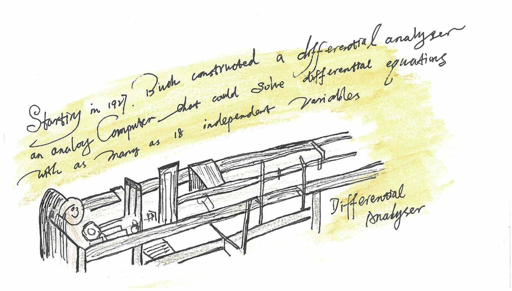
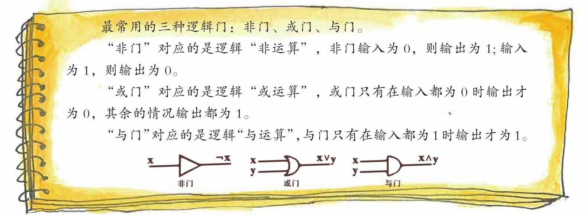

布尔的思想其实在当时沉寂了很长时间，事实上在布尔代数提出后的80多年里，它并没有得到什么像样的应用，和布尔同时代的人不明白布尔把0和1在那里算来算去能做什么事。
直到20世纪30年代后期，一个叫香农的美国人出现后，情况才有了改变。
香农1916年生于美国密歇根州，1932年他到密歇根大学学习电气工程和数学。
4年后临近毕业时，他在公告板上看到一张海报，上面提供了一个麻省理工学院的研究生岗位。原来是工程学院的院长万内瓦尔·布什（Vannevar Bush）需要一名研究助理，这位后来被人称为“信息时代的教父”的布什需要人来操作他的微分分析机。
这个微分分析机是一个重达百吨、有着转动的轴承和齿轮的铁家伙，在海报上，它被称为“机器大脑”。海报上说这个机器大脑很神奇，它能做高等数学题，可以解出人类要花数月才能求解的方程。
香农应聘了这个岗位，并成功了。
香农到了布什这里后了解到，这台微分分析机主要用于求解微分方程，尽管当时这台机器只能以百分之二的精度求解方程，但是教授和学生们还是蜂拥而来，希望求得微分分析机一用。

万内瓦尔·布什的微分分析机
其实，在这台微分分析机出现的100年前，一个叫查尔斯·巴贝奇（Charles Babbage）的英国人也设计过类似的机器，不过巴贝奇没有成功。
与巴贝奇的机器类似，布什的微分分析机在本质上也是机械的，但随着构造的逐渐完善，也越来越多地使用了机电开关。一百多个继电器采用复杂的方式连接起来后，以特定的顺序连通与断开，就能协调微分分析机的运转。
作为操作员的香农被这台“机器大脑”迷倒了，当时香农正为自己的硕士论文寻找题目，他意识到这些偶尔咔嚓作响的继电器有文章可做。
他曾在大学上过一门符号逻辑的课程，现在当他试着把众多开关电路的可能组合整理成表的时候。他突然有一种似曾相识的感觉，他意识到，当时在课堂上觉得古怪的符号逻辑——布尔代数——应该可以用来描述电路！
香农意识到继电器从一个电路向下一个电路所传递的，并不是电，而是一个事实——这个电路是闭合还是断开——也就是上一个断开或闭合的继电器会导致下一个继电器的断开或闭合，这一系列的断开和闭合用文字来描述未免太过啰嗦，简化成符号就更简洁，也便于人们在表达式中对符号加以操作。
真和假——是与否——开和关——1和0，这时香农更加理解了的布尔的思想，仿佛布尔提出的“0和1”的演算是专门为他准备的。
跟布尔一样，香农也表明他的表达式里只需两个数：0和1。其中0表示闭合电路，1表示断开电路。
香农注意到串联电路其实对应逻辑连接词“与”，而并联电路对应逻辑连接词“或”，而逻辑运算“否”也可以用电路来表示。他还发现，电路也可以像在逻辑推理中一样，作出“如果……那么……”的选择操作。
“一种演算法已经被发展出来了，借此可以通过简单的数学过程来推导这些表达式”——香农在他1937年的硕士论文中以这样响亮的宣言作为开篇，他写道：“使用继电电路进行复杂的数学运算是可能的，事实上，任何可以用‘与’‘或’‘如果’等字眼在有限步内加以完整描述的操作，都可以用继电器自动完成。”
二进制算术与逻辑电路——这样的选题在当时电气工程学生的论文中是前所未见的，也许谁也没意识到这篇出自一个研究助理的硕士论文，蕴涵着即将到来的计算机革命的核心。
香农有着不同寻常的一面，他曾在贝尔实验室的门厅骑着独轮车并同时耍着4个球，他有一句有意思的语录：我可以想象，我们将成为机器人，狗将成为人的时刻将要来到，我为机器鼓气加油。
